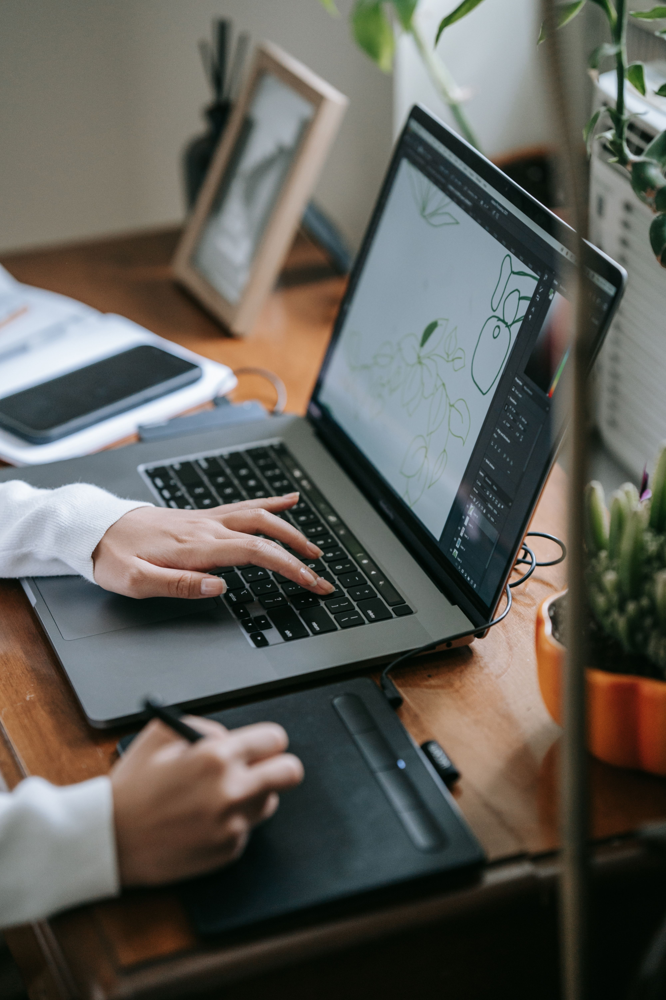

Mijn projecten
Ontdek mijn creatieve en technische projecten. Hier vind je meer over mijn werk en interesses.

Grafisch ontwerp
Ik hou van creatief ontwerpen en experimenteren met kleuren, vormen en typografie.
Bekijk projecten
Programmeren
Hier toon ik mijn programmeeroefeningen en projecten die ik tijdens mijn opleiding maak.
Bekijk projecten
Webdesign
Ik ontwerp websites met aandacht voor gebruiksvriendelijkheid en een mooi ontwerp.
Bekijk projecten